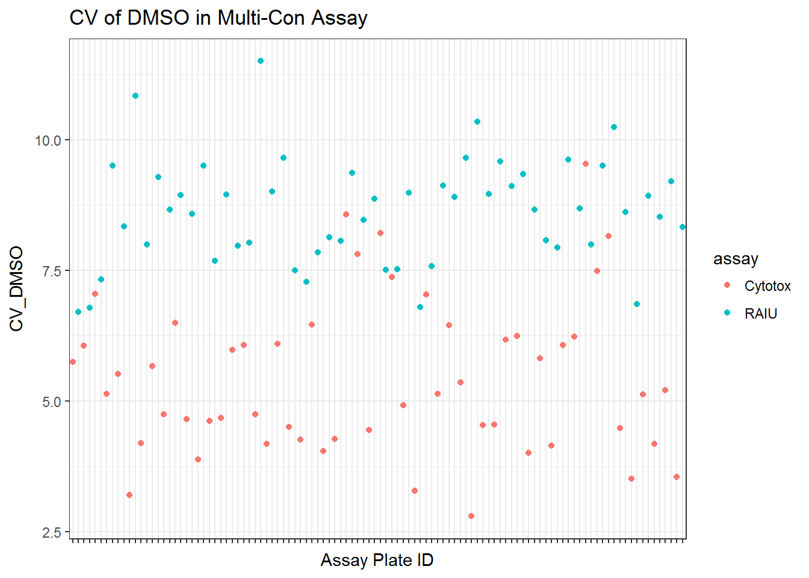
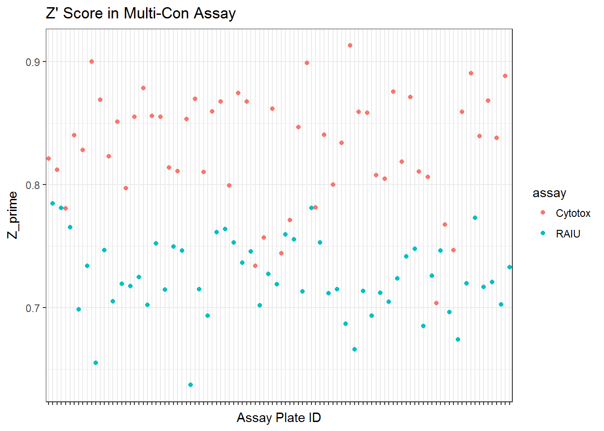
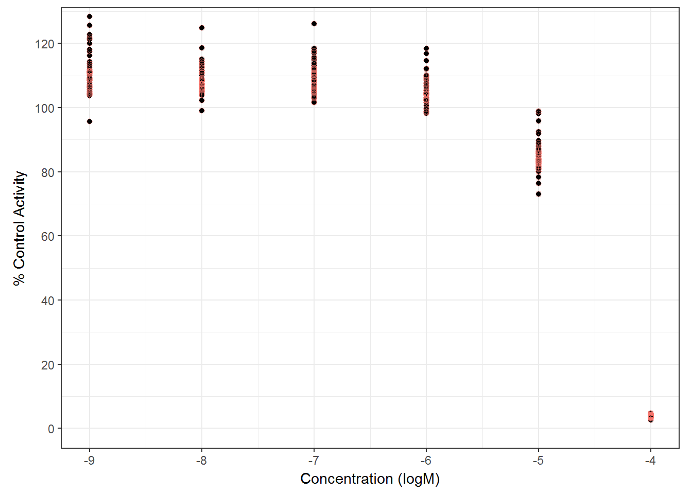
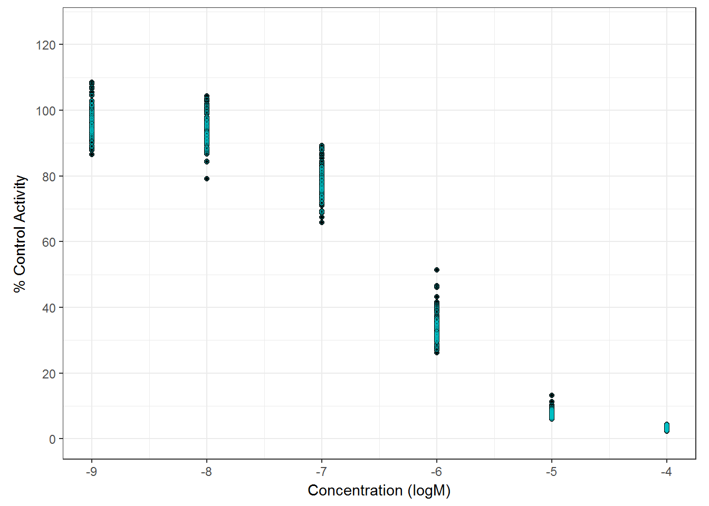
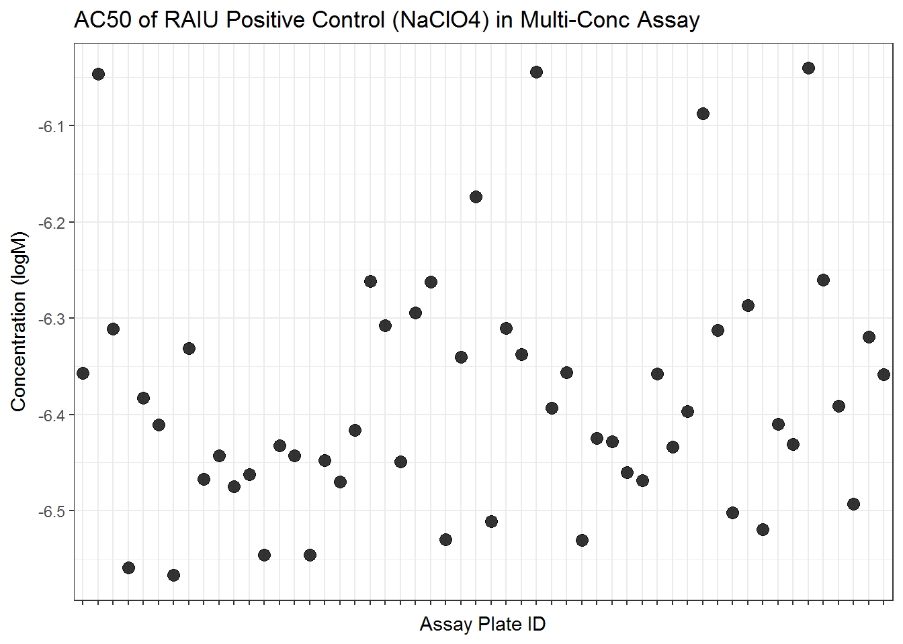
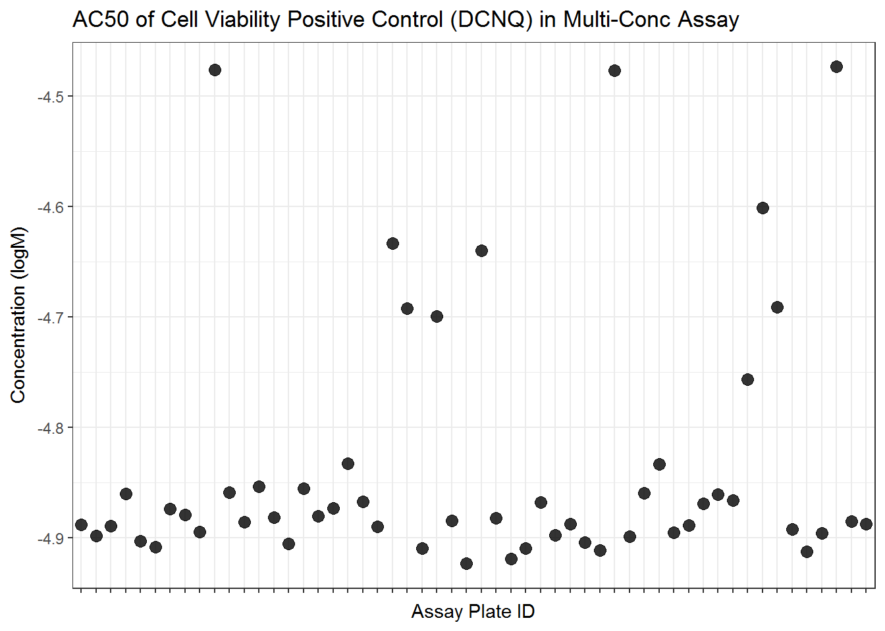
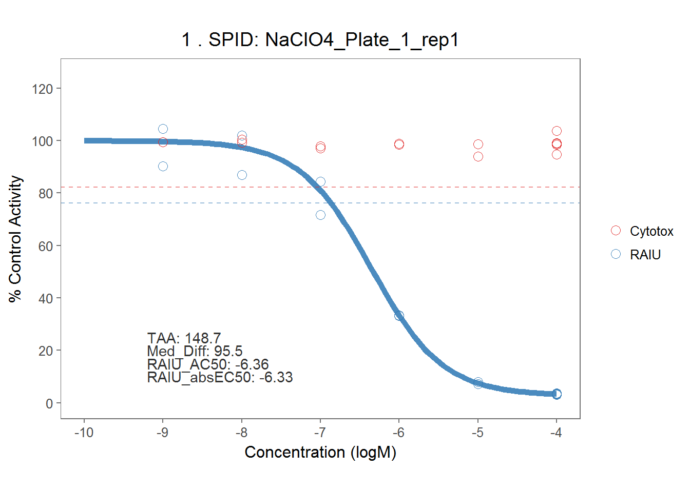
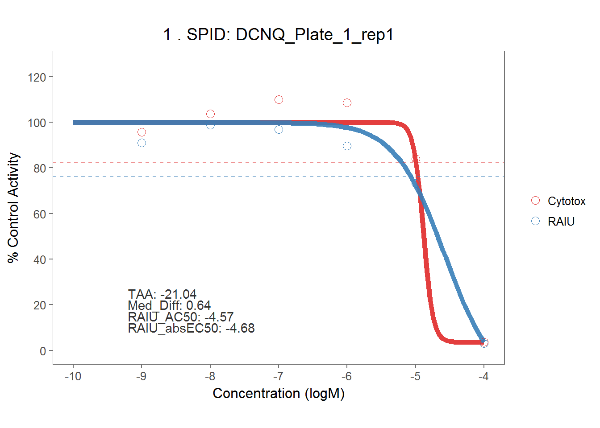
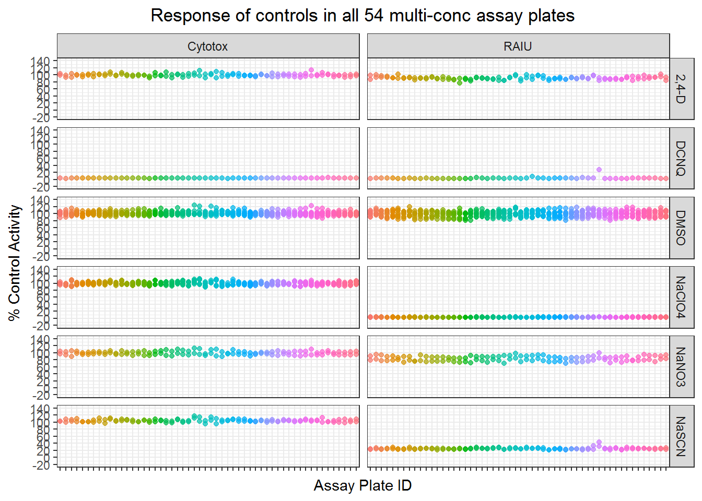

5 Multi-Conc Results Analysis
5.1 Import MC data
#Get the spid of the 169 chemicals entering multi-con test.
dt_mc_ls <- read_csv("./input data files/NIS_ph1_v2_mc_lvl0_for_tcpl_raiu.csv", na = "NA") %>% select(spid)
mc_chem_list <- unique(dt_mc_ls$spid)[-(1:6)]
ls169 <- sc_median %>%
filter(mc_test=="Yes") %>%
dplyr::select(spid)
ls11 <- data.frame(mc_chem_list) %>%
mutate(flag = (mc_chem_list %in% ls169$spid)) %>%
filter(flag==FALSE) %>%
dplyr::select(mc_chem_list) %>% rename(spid=mc_chem_list)
spid_chnm_table <- read_excel("./raw data files/EPA_11700_EPA-SLaws_ph1v2_150ul_20170125_key.xlsx")
spid_chnm_table <- spid_chnm_table %>% dplyr::select(EPA_Sample_ID, CASRN, Preferred_Name)
# rename the column title to be compatible with tcpl package.
names(spid_chnm_table) <- c("spid", "casn", "chnm")
# Import MC data (look at the 169 chemicals)
mc_lvl0_raiu_update <-
read_csv("./input data files/NIS_ph1_v2_mc_lvl0_for_tcpl_raiu.csv") %>%
filter(!(spid %in% ls11$spid))
mc_lvl0_cyto_update <-
read_csv("./input data files/NIS_ph1_v2_mc_lvl0_for_tcpl_cytotox.csv") %>%
filter(!(spid %in% ls11$spid))
dt_mc <- bind_rows(mc_lvl0_cyto_update, mc_lvl0_raiu_update)5.2 Normalization
Normalize raw response to the median of DMSO controls, calculated per plate.
dt_mc_norm <- toxplot::normalize_per_plate(dt_mc)5.3 3bMAD of MC
#create concentration index
dt_mc_norm <- dt_mc_norm %>%
group_by(spid) %>%
mutate(cndx = generate_index(conc)) %>%
ungroup
sig_mc <- dt_mc_norm %>%
mutate(neg_nval_median= 100 - nval_median) %>%
group_by(assay) %>%
dplyr::filter(wllt == "t") %>%
dplyr::filter(cndx == 1 | cndx == 2) %>%
summarise(bMAD = mad(neg_nval_median, na.rm = TRUE),
three_bMAD=3*mad(neg_nval_median, na.rm = TRUE))
knitr::kable(sig_mc, digits =2)| assay | bMAD | three_bMAD |
|---|---|---|
| Cytotox | 5.89 | 17.68 |
| RAIU | 7.93 | 23.78 |
5.4 Multi-Con QC
5.4.1 Quality Control
To assesss the quality of assay for each 96 well plate, the following metrics were used .
* CV of DMSO controls
* Z' score The negative control DMSO wells’ raw readings were used to calculate mean, standard deviation and CV for each plate.
Z’ score and SSMD were calculated for each plate as well using the raw data of DMSO negative control, RAIU or cytotox positive control readings. Note the positive control values are taken from the highest concentration wells, which represent the maximum RAIU inhibition or toxic inhibition observed on the positive control chemicals.
Z’ factor is calculated as follows:
\[Z'=1-\frac{3\sigma_{positive\ control} + 3\sigma_{DMSO\ control}}{|\mu_{positive\ control} - \mu_{DMSO\ control}|}\]
**Note that in Z’ calculation, because we only had one well of cytotox positive control, therefore sigma wasn’t calculatable. This make the cytotox Z’ score looks better than the RAIU.
# function to calculate CV_DMSO, Z' and SSMD for each plate
# Note the calculation is based on raw/unnormalized data.
#dt_mc_norm <- readRDS("dt_mc_norm.rds")
qc_mc <- qc_per_plate(dt_mc_norm, assay_info, resp = "nval_median")
#qc_l <- qc %>% gather(metric, value, CV_DMSO:SSMD)
# qplot(unique_id, SSMD, data=qc, color = assay_name) + theme(axis.text.x=element_blank(), axis.ticks.x=element_blank())
qplot(unique_id, CV_DMSO, data=qc_mc$qc, color = assay) +
ggtitle("CV of DMSO in Multi-Con Assay") +
xlab("Assay Plate ID")+
scale_x_discrete(labels=NULL)+
theme_bw()
#theme(axis.text.x=element_blank(),axis.ticks.x=element_blank())
qplot(unique_id, Z_prime, data=qc_mc$qc, color = assay) +
ggtitle("Z' Score in Multi-Con Assay") +
xlab("Assay Plate ID")+
scale_x_discrete(labels=NULL) +
theme_bw()
#theme(axis.text.x=element_blank(),axis.ticks.x=element_blank())The summary of qulaity control metrics for Multi-conc Cell Viability Assay:
qc_mc_cyto <- qc_mc$qc %>% filter(assay == "Cytotox") %>%
dplyr::select(CV_DMSO, Z_prime) %>%
describe
knitr::kable(qc_mc_cyto[2:3,], digits = 2,
caption = "Summary of Multi-Conc Cell Viability Assay QC Metrics")| vars | n | mean | sd | median | trimmed | mad | min | max | range | skew | kurtosis | se | |
|---|---|---|---|---|---|---|---|---|---|---|---|---|---|
| CV_DMSO | 2 | 54 | 5.42 | 1.47 | 5.14 | 5.32 | 1.40 | 2.8 | 9.54 | 6.74 | 0.64 | -0.09 | 0.20 |
| Z_prime | 3 | 54 | 0.83 | 0.05 | 0.84 | 0.83 | 0.04 | 0.7 | 0.91 | 0.21 | -0.63 | -0.10 | 0.01 |
Summary of qc metrics for Multi-conc RAIU assay:
qc_mc_r <- qc_mc$qc %>% filter(assay == "RAIU") %>%
dplyr::select(CV_DMSO, Z_prime) %>%
describe## Adding missing grouping variables: `apid`## Warning: NAs introduced by coercion## Warning in FUN(newX[, i], ...): no non-missing arguments to min; returning
## Inf## Warning in FUN(newX[, i], ...): no non-missing arguments to max; returning
## -Infknitr::kable(qc_mc_r[2:3,], caption="Summary Multi-Conc RAIU Assay QC Metrics")| vars | n | mean | sd | median | trimmed | mad | min | max | range | skew | kurtosis | se | |
|---|---|---|---|---|---|---|---|---|---|---|---|---|---|
| CV_DMSO | 2 | 54 | 8.6167424 | 1.014914 | 8.6613033 | 8.598188 | 1.0016105 | 6.704893 | 11.4977674 | 4.7928743 | 0.2629207 | 0.0569357 | 0.1381124 |
| Z_prime | 3 | 54 | 0.7244648 | 0.031661 | 0.7202322 | 0.725418 | 0.0337723 | 0.637237 | 0.7846036 | 0.1473666 | -0.2947822 | -0.0649648 | 0.0043085 |
All qc metrics in a table:
knitr::kable(dplyr::select(qc_mc$qc, apid, assay, CV_DMSO, Z_prime),
digits = 2,
longtable = TRUE,
col.names = c("Plate", "assay","CV of DMSO", "Z'"),
caption = "Plate-wise quality control metrics in Multi-Conc Assays")| Plate | assay | CV of DMSO | Z’ |
|---|---|---|---|
| Plate_1_rep1 | RAIU | 6.70 | 0.78 |
| Plate_1_rep2 | RAIU | 6.78 | 0.78 |
| Plate_1_rep3 | RAIU | 7.33 | 0.77 |
| Plate_10_rep1 | RAIU | 9.50 | 0.70 |
| Plate_10_rep2 | RAIU | 8.34 | 0.73 |
| Plate_10_rep3 | RAIU | 10.84 | 0.66 |
| Plate_11_rep1 | RAIU | 8.00 | 0.75 |
| Plate_11_rep2 | RAIU | 9.28 | 0.70 |
| Plate_11_rep3 | RAIU | 8.66 | 0.72 |
| Plate_12_rep1 | RAIU | 8.93 | 0.72 |
| Plate_12_rep2 | RAIU | 8.59 | 0.72 |
| Plate_12_rep3 | RAIU | 9.50 | 0.70 |
| Plate_13_rep1 | RAIU | 7.68 | 0.75 |
| Plate_13_rep2 | RAIU | 8.95 | 0.71 |
| Plate_13_rep3 | RAIU | 7.97 | 0.75 |
| Plate_14_rep1 | RAIU | 8.02 | 0.75 |
| Plate_14_rep2 | RAIU | 11.50 | 0.64 |
| Plate_14_rep3 | RAIU | 9.01 | 0.71 |
| Plate_15_rep1 | RAIU | 9.65 | 0.69 |
| Plate_15_rep2 | RAIU | 7.50 | 0.76 |
| Plate_15_rep3 | RAIU | 7.28 | 0.76 |
| Plate_16_rep1 | RAIU | 7.85 | 0.75 |
| Plate_16_rep2 | RAIU | 8.13 | 0.74 |
| Plate_16_rep3 | RAIU | 8.06 | 0.75 |
| Plate_17_rep1 | RAIU | 9.37 | 0.70 |
| Plate_17_rep2 | RAIU | 8.46 | 0.73 |
| Plate_17_rep3 | RAIU | 8.87 | 0.72 |
| Plate_18_rep1 | RAIU | 7.51 | 0.76 |
| Plate_18_rep2 | RAIU | 7.52 | 0.76 |
| Plate_18_rep3 | RAIU | 8.98 | 0.71 |
| Plate_2_rep1 | RAIU | 6.80 | 0.78 |
| Plate_2_rep2 | RAIU | 7.58 | 0.75 |
| Plate_2_rep3 | RAIU | 9.12 | 0.71 |
| Plate_3_rep1 | RAIU | 8.90 | 0.72 |
| Plate_3_rep2 | RAIU | 9.66 | 0.69 |
| Plate_3_rep3 | RAIU | 10.34 | 0.67 |
| Plate_4_rep1 | RAIU | 8.96 | 0.71 |
| Plate_4_rep2 | RAIU | 9.59 | 0.69 |
| Plate_4_rep3 | RAIU | 9.11 | 0.71 |
| Plate_5_rep1 | RAIU | 9.34 | 0.70 |
| Plate_5_rep2 | RAIU | 8.66 | 0.72 |
| Plate_5_rep3 | RAIU | 8.07 | 0.74 |
| Plate_6_rep1 | RAIU | 7.94 | 0.75 |
| Plate_6_rep2 | RAIU | 9.61 | 0.69 |
| Plate_6_rep3 | RAIU | 8.69 | 0.73 |
| Plate_7_rep1 | RAIU | 7.99 | 0.75 |
| Plate_7_rep2 | RAIU | 9.49 | 0.70 |
| Plate_7_rep3 | RAIU | 10.23 | 0.67 |
| Plate_8_rep1 | RAIU | 8.61 | 0.72 |
| Plate_8_rep2 | RAIU | 6.85 | 0.77 |
| Plate_8_rep3 | RAIU | 8.93 | 0.72 |
| Plate_9_rep1 | RAIU | 8.52 | 0.72 |
| Plate_9_rep2 | RAIU | 9.20 | 0.70 |
| Plate_9_rep3 | RAIU | 8.33 | 0.73 |
| Plate_1_rep1 | Cytotox | 5.75 | 0.82 |
| Plate_1_rep2 | Cytotox | 6.06 | 0.81 |
| Plate_1_rep3 | Cytotox | 7.05 | 0.78 |
| Plate_10_rep1 | Cytotox | 5.14 | 0.84 |
| Plate_10_rep2 | Cytotox | 5.52 | 0.83 |
| Plate_10_rep3 | Cytotox | 3.21 | 0.90 |
| Plate_11_rep1 | Cytotox | 4.19 | 0.87 |
| Plate_11_rep2 | Cytotox | 5.67 | 0.82 |
| Plate_11_rep3 | Cytotox | 4.75 | 0.85 |
| Plate_12_rep1 | Cytotox | 6.50 | 0.80 |
| Plate_12_rep2 | Cytotox | 4.66 | 0.86 |
| Plate_12_rep3 | Cytotox | 3.89 | 0.88 |
| Plate_13_rep1 | Cytotox | 4.62 | 0.86 |
| Plate_13_rep2 | Cytotox | 4.68 | 0.85 |
| Plate_13_rep3 | Cytotox | 5.98 | 0.81 |
| Plate_14_rep1 | Cytotox | 6.08 | 0.81 |
| Plate_14_rep2 | Cytotox | 4.74 | 0.85 |
| Plate_14_rep3 | Cytotox | 4.19 | 0.87 |
| Plate_15_rep1 | Cytotox | 6.10 | 0.81 |
| Plate_15_rep2 | Cytotox | 4.50 | 0.86 |
| Plate_15_rep3 | Cytotox | 4.27 | 0.87 |
| Plate_16_rep1 | Cytotox | 6.46 | 0.80 |
| Plate_16_rep2 | Cytotox | 4.05 | 0.87 |
| Plate_16_rep3 | Cytotox | 4.28 | 0.87 |
| Plate_17_rep1 | Cytotox | 8.56 | 0.73 |
| Plate_17_rep2 | Cytotox | 7.81 | 0.76 |
| Plate_17_rep3 | Cytotox | 4.45 | 0.86 |
| Plate_18_rep1 | Cytotox | 8.21 | 0.74 |
| Plate_18_rep2 | Cytotox | 7.37 | 0.77 |
| Plate_18_rep3 | Cytotox | 4.92 | 0.85 |
| Plate_2_rep1 | Cytotox | 3.29 | 0.90 |
| Plate_2_rep2 | Cytotox | 7.04 | 0.78 |
| Plate_2_rep3 | Cytotox | 5.14 | 0.84 |
| Plate_3_rep1 | Cytotox | 6.45 | 0.80 |
| Plate_3_rep2 | Cytotox | 5.35 | 0.83 |
| Plate_3_rep3 | Cytotox | 2.80 | 0.91 |
| Plate_4_rep1 | Cytotox | 4.54 | 0.86 |
| Plate_4_rep2 | Cytotox | 4.55 | 0.86 |
| Plate_4_rep3 | Cytotox | 6.17 | 0.81 |
| Plate_5_rep1 | Cytotox | 6.25 | 0.80 |
| Plate_5_rep2 | Cytotox | 4.01 | 0.88 |
| Plate_5_rep3 | Cytotox | 5.82 | 0.82 |
| Plate_6_rep1 | Cytotox | 4.15 | 0.87 |
| Plate_6_rep2 | Cytotox | 6.07 | 0.81 |
| Plate_6_rep3 | Cytotox | 6.23 | 0.81 |
| Plate_7_rep1 | Cytotox | 9.54 | 0.70 |
| Plate_7_rep2 | Cytotox | 7.48 | 0.77 |
| Plate_7_rep3 | Cytotox | 8.16 | 0.75 |
| Plate_8_rep1 | Cytotox | 4.48 | 0.86 |
| Plate_8_rep2 | Cytotox | 3.52 | 0.89 |
| Plate_8_rep3 | Cytotox | 5.13 | 0.84 |
| Plate_9_rep1 | Cytotox | 4.19 | 0.87 |
| Plate_9_rep2 | Cytotox | 5.21 | 0.84 |
| Plate_9_rep3 | Cytotox | 3.56 | 0.89 |
5.4.2 Sodium Perchlorate & DCNQ
On each assay plate, sodium perchlorate and DCNQ were included in six concentrations to serve as positive controls for RAIU and Cytotox assay. Here they are modelled separately by each assay plate.
##extract mc related data frame
d_pos_cyto <- dt_mc_norm %>% filter(assay == "Cytotox", wllt== "pc")
d_pos_raiu <- dt_mc_norm %>% filter(assay == "RAIU", wllt=="pr")
d_neg_cyto <- dt_mc_norm %>% filter(assay == "Cytotox", wllt=="nrc")
d_neg_raiu <- dt_mc_norm %>% filter(assay == "RAIU", wllt=="nrc")
d_ec80_raiu <- dt_mc_norm %>% filter(assay == "RAIU", wllt=="pr_ec80")
d_ec20_raiu <- dt_mc_norm %>% filter(assay == "RAIU", wllt=="pr_ec20")
##plot all DCNQ in multi-con
g_cyto_pos <- qplot(data=d_pos_cyto, x=log10(conc), y=nval_median) +
labs(
#title = paste("SPID: " , spid, "\nNAME: ", chnm, "\nCAS NO: ", casn, sep = ""),
x = "Concentration (logM)",
y = "% Control Activity"
) +
geom_point(
color = "#F8766D",
shape = 1,
alpha = 0.5,
size = 1.8
) +
coord_fixed(
ylim = c(0, 125),
xlim = c(-9, -4),
ratio = 2 / 70
) +
scale_y_continuous(breaks = seq(
from = 0,
to = 120,
by = 20
)) +
theme_bw() +
# scale_color_manual(values=c("red","blue"))+
theme(legend.title = element_blank())+
theme(plot.title=element_text(hjust=0.5))
g_cyto_pos
##plot all NaClO4 in multi-con
g_raiu_pos <- qplot(data=d_pos_raiu, x=log10(conc), y=nval_median) +
labs(
#title = paste("SPID: " , spid, "\nNAME: ", chnm, "\nCAS NO: ", casn, sep = ""),
x = "Concentration (logM)",
y = "% Control Activity"
) +
geom_point(
color = "#00BFC4",
shape = 1,
alpha = 0.5,
size = 1
) +
coord_fixed(
ylim = c(0, 125),
xlim = c(-9, -4),
ratio = 2 / 70
) +
scale_y_continuous(breaks = seq(
from = 0,
to = 120,
by = 20
)) +
theme_bw() +
theme(legend.title = element_blank())+
theme(plot.title=element_text(hjust=0.5))
g_raiu_pos
# Obtain AC50 and absEC50 for the positive controls
d_pos_raiu <- mutate(d_pos_raiu, spid = paste(spid, apid, sep = "_"))
pos_raiu_md <- toxplot::fit_curve_tcpl(df = d_pos_raiu,
assay_info = list(prim_assay = "RAIU", toxi_assay = NULL))## Processing 54 samples(spid)....
## NaClO4_Plate_1_rep1 ||NaClO4_Plate_1_rep2 ||NaClO4_Plate_1_rep3 ||NaClO4_Plate_10_rep1 ||NaClO4_Plate_10_rep2 ||NaClO4_Plate_10_rep3 ||NaClO4_Plate_11_rep1 ||NaClO4_Plate_11_rep2 ||NaClO4_Plate_11_rep3 ||NaClO4_Plate_12_rep1 ||NaClO4_Plate_12_rep2 ||NaClO4_Plate_12_rep3 ||NaClO4_Plate_13_rep1 ||NaClO4_Plate_13_rep2 ||NaClO4_Plate_13_rep3 ||NaClO4_Plate_14_rep1 ||NaClO4_Plate_14_rep2 ||NaClO4_Plate_14_rep3 ||NaClO4_Plate_15_rep1 ||NaClO4_Plate_15_rep2 ||NaClO4_Plate_15_rep3 ||NaClO4_Plate_16_rep1 ||NaClO4_Plate_16_rep2 ||NaClO4_Plate_16_rep3 ||NaClO4_Plate_17_rep1 ||NaClO4_Plate_17_rep2 ||NaClO4_Plate_17_rep3 ||NaClO4_Plate_18_rep1 ||NaClO4_Plate_18_rep2 ||NaClO4_Plate_18_rep3 ||NaClO4_Plate_2_rep1 ||NaClO4_Plate_2_rep2 ||NaClO4_Plate_2_rep3 ||NaClO4_Plate_3_rep1 ||NaClO4_Plate_3_rep2 ||NaClO4_Plate_3_rep3 ||NaClO4_Plate_4_rep1 ||NaClO4_Plate_4_rep2 ||NaClO4_Plate_4_rep3 ||NaClO4_Plate_5_rep1 ||NaClO4_Plate_5_rep2 ||NaClO4_Plate_5_rep3 ||NaClO4_Plate_6_rep1 ||NaClO4_Plate_6_rep2 ||NaClO4_Plate_6_rep3 ||NaClO4_Plate_7_rep1 ||NaClO4_Plate_7_rep2 ||NaClO4_Plate_7_rep3 ||NaClO4_Plate_8_rep1 ||NaClO4_Plate_8_rep2 ||NaClO4_Plate_8_rep3 ||NaClO4_Plate_9_rep1 ||NaClO4_Plate_9_rep2 ||NaClO4_Plate_9_rep3 ||
## Curve Fitting Completed!
## Calculation time: 9.1 secsraiu_pos_tbl <- toxplot::summary_tcpl(pos_raiu_md)
d_pos_cyto <- mutate(d_pos_cyto, spid = paste(spid, apid, sep = "_"))
pos_cyto_md <- toxplot::fit_curve_tcpl(df = d_pos_cyto,
assay_info = list(prim_assay = NULL, toxi_assay = "Cytotox"))## Processing 54 samples(spid)....
## DCNQ_Plate_1_rep1 ||DCNQ_Plate_1_rep2 ||DCNQ_Plate_1_rep3 ||DCNQ_Plate_10_rep1 ||DCNQ_Plate_10_rep2 ||DCNQ_Plate_10_rep3 ||DCNQ_Plate_11_rep1 ||DCNQ_Plate_11_rep2 ||DCNQ_Plate_11_rep3 ||DCNQ_Plate_12_rep1 ||DCNQ_Plate_12_rep2 ||DCNQ_Plate_12_rep3 ||DCNQ_Plate_13_rep1 ||DCNQ_Plate_13_rep2 ||DCNQ_Plate_13_rep3 ||DCNQ_Plate_14_rep1 ||DCNQ_Plate_14_rep2 ||DCNQ_Plate_14_rep3 ||DCNQ_Plate_15_rep1 ||DCNQ_Plate_15_rep2 ||DCNQ_Plate_15_rep3 ||DCNQ_Plate_16_rep1 ||DCNQ_Plate_16_rep2 ||DCNQ_Plate_16_rep3 ||DCNQ_Plate_17_rep1 ||DCNQ_Plate_17_rep2 ||DCNQ_Plate_17_rep3 ||DCNQ_Plate_18_rep1 ||DCNQ_Plate_18_rep2 ||DCNQ_Plate_18_rep3 ||DCNQ_Plate_2_rep1 ||DCNQ_Plate_2_rep2 ||DCNQ_Plate_2_rep3 ||DCNQ_Plate_3_rep1 ||DCNQ_Plate_3_rep2 ||DCNQ_Plate_3_rep3 ||DCNQ_Plate_4_rep1 ||DCNQ_Plate_4_rep2 ||DCNQ_Plate_4_rep3 ||DCNQ_Plate_5_rep1 ||DCNQ_Plate_5_rep2 ||DCNQ_Plate_5_rep3 ||DCNQ_Plate_6_rep1 ||DCNQ_Plate_6_rep2 ||DCNQ_Plate_6_rep3 ||DCNQ_Plate_7_rep1 ||DCNQ_Plate_7_rep2 ||DCNQ_Plate_7_rep3 ||DCNQ_Plate_8_rep1 ||DCNQ_Plate_8_rep2 ||DCNQ_Plate_8_rep3 ||DCNQ_Plate_9_rep1 ||DCNQ_Plate_9_rep2 ||DCNQ_Plate_9_rep3 ||
## Curve Fitting Completed!
## Calculation time: 5.4 secscyto_pos_tbl <- toxplot::summary_tcpl(pos_cyto_md)
pos_tbl <- bind_rows(cyto_pos_tbl, raiu_pos_tbl) #this is the modelling results for all mc positive 5.4.2.1 Visualize AC50s
ggplot(raiu_pos_tbl, aes(spid, AC50_prim)) +
geom_point(alpha=0.8, size=3)+
scale_x_discrete(labels=NULL)+
ggtitle("AC50 of RAIU Positive Control (NaClO4) in Multi-Conc Assay")+
xlab("Assay Plate ID") +
ylab("Concentration (logM)") +
theme(plot.title = element_text(hjust=0.5)) +
theme_bw() 
ggplot(cyto_pos_tbl, aes(spid, AC50_toxi)) +
geom_point(alpha=0.8, size=3)+
#facet_grid(Metric~., scale="free")+
scale_x_discrete(labels=NULL)+
ggtitle("AC50 of Cell Viability Positive Control (DCNQ) in Multi-Conc Assay")+
xlab("Assay Plate ID") +
ylab("Concentration (logM)") +
theme(plot.title = element_text(hjust=0.5)) +
theme_bw() 
5.4.2.2 Summarize AC50s of positive controls in multi-conc assays
##summarizing AC50s of positive controls.
library(psych)
pos_sum_raiu <- raiu_pos_tbl %>%
dplyr::select(AC50_prim, absEC50_prim) %>%
describe
pos_sum_cyto <- cyto_pos_tbl %>%
dplyr::select(AC50_toxi, absEC50_toxi) %>%
describe
knitr::kable(pos_sum_raiu, digits = 2, caption="Summary of RAIU positive control IC50s")| vars | n | mean | sd | median | trimmed | mad | min | max | range | skew | kurtosis | se | |
|---|---|---|---|---|---|---|---|---|---|---|---|---|---|
| AC50_prim | 1 | 54 | -6.38 | 0.13 | -6.41 | -6.40 | 0.11 | -6.57 | -6.04 | 0.53 | 1.04 | 0.83 | 0.02 |
| absEC50_prim | 2 | 54 | -6.36 | 0.13 | -6.39 | -6.38 | 0.10 | -6.54 | -6.04 | 0.51 | 0.89 | 0.52 | 0.02 |
knitr::kable(pos_sum_cyto, digits = 2, caption="Summary of Cytotox positive control IC50s")| vars | n | mean | sd | median | trimmed | mad | min | max | range | skew | kurtosis | se | |
|---|---|---|---|---|---|---|---|---|---|---|---|---|---|
| AC50_toxi | 1 | 54 | -4.83 | 0.12 | -4.88 | -4.86 | 0.03 | -4.92 | -4.47 | 0.45 | 1.98 | 2.87 | 0.02 |
| absEC50_toxi | 2 | 54 | -4.83 | 0.10 | -4.88 | -4.85 | 0.03 | -4.92 | -4.55 | 0.37 | 1.75 | 1.74 | 0.01 |
5.4.2.3 Dose-Response of Positive Controls on each plate
# perchlorate
dt_perchlorate <- dt_mc_norm %>% filter(spid == "NaClO4") %>%
mutate(spid = paste(spid, pid, rep, sep = "_"))
#dt_perchlorate <- dt_mc_norm %>% filter(spid == "NaClO4")
perchlorate_md <- fit_curve_tcpl(dt_perchlorate,
assay_info = list(prim_assay = "RAIU", toxi_assay = "Cytotox"),
prim_cutoff = 23.78165,
toxi_cutoff = 17.68251)## Processing 54 samples(spid)....
## NaClO4_Plate_1_rep1 ||NaClO4_Plate_1_rep2 ||NaClO4_Plate_1_rep3 ||NaClO4_Plate_10_rep1 ||NaClO4_Plate_10_rep2 ||NaClO4_Plate_10_rep3 ||NaClO4_Plate_11_rep1 ||NaClO4_Plate_11_rep2 ||NaClO4_Plate_11_rep3 ||NaClO4_Plate_12_rep1 ||NaClO4_Plate_12_rep2 ||NaClO4_Plate_12_rep3 ||NaClO4_Plate_13_rep1 ||NaClO4_Plate_13_rep2 ||NaClO4_Plate_13_rep3 ||NaClO4_Plate_14_rep1 ||NaClO4_Plate_14_rep2 ||NaClO4_Plate_14_rep3 ||NaClO4_Plate_15_rep1 ||NaClO4_Plate_15_rep2 ||NaClO4_Plate_15_rep3 ||NaClO4_Plate_16_rep1 ||NaClO4_Plate_16_rep2 ||NaClO4_Plate_16_rep3 ||NaClO4_Plate_17_rep1 ||NaClO4_Plate_17_rep2 ||NaClO4_Plate_17_rep3 ||NaClO4_Plate_18_rep1 ||NaClO4_Plate_18_rep2 ||NaClO4_Plate_18_rep3 ||NaClO4_Plate_2_rep1 ||NaClO4_Plate_2_rep2 ||NaClO4_Plate_2_rep3 ||NaClO4_Plate_3_rep1 ||NaClO4_Plate_3_rep2 ||NaClO4_Plate_3_rep3 ||NaClO4_Plate_4_rep1 ||NaClO4_Plate_4_rep2 ||NaClO4_Plate_4_rep3 ||NaClO4_Plate_5_rep1 ||NaClO4_Plate_5_rep2 ||NaClO4_Plate_5_rep3 ||NaClO4_Plate_6_rep1 ||NaClO4_Plate_6_rep2 ||NaClO4_Plate_6_rep3 ||NaClO4_Plate_7_rep1 ||NaClO4_Plate_7_rep2 ||NaClO4_Plate_7_rep3 ||NaClO4_Plate_8_rep1 ||NaClO4_Plate_8_rep2 ||NaClO4_Plate_8_rep3 ||NaClO4_Plate_9_rep1 ||NaClO4_Plate_9_rep2 ||NaClO4_Plate_9_rep3 ||
## Curve Fitting Completed!
## Calculation time: 13.4 secsperchlorate_rank <- rank_tcpl(perchlorate_md)
#perchlorate_rank$taa %>% median
perchlorate_plots <- plot_tcpl(perchlorate_md, perchlorate_rank, notation = T)
perchlorate_plots[[1]]
# DCNQ
dt_dcnq <- dt_mc_norm %>% filter(spid == "DCNQ") %>%
mutate(spid = paste(spid, pid, rep, sep = "_"))
dcnq_md <- fit_curve_tcpl(dt_dcnq,
assay_info = list(prim_assay = "RAIU", toxi_assay = "Cytotox"),
prim_cutoff = 23.78165,
toxi_cutoff = 17.68251)## Processing 54 samples(spid)....
## DCNQ_Plate_1_rep1 ||DCNQ_Plate_1_rep2 ||DCNQ_Plate_1_rep3 ||DCNQ_Plate_10_rep1 ||DCNQ_Plate_10_rep2 ||DCNQ_Plate_10_rep3 ||DCNQ_Plate_11_rep1 ||DCNQ_Plate_11_rep2 ||DCNQ_Plate_11_rep3 ||DCNQ_Plate_12_rep1 ||DCNQ_Plate_12_rep2 ||DCNQ_Plate_12_rep3 ||DCNQ_Plate_13_rep1 ||DCNQ_Plate_13_rep2 ||DCNQ_Plate_13_rep3 ||DCNQ_Plate_14_rep1 ||DCNQ_Plate_14_rep2 ||DCNQ_Plate_14_rep3 ||DCNQ_Plate_15_rep1 ||DCNQ_Plate_15_rep2 ||DCNQ_Plate_15_rep3 ||DCNQ_Plate_16_rep1 ||DCNQ_Plate_16_rep2 ||DCNQ_Plate_16_rep3 ||DCNQ_Plate_17_rep1 ||DCNQ_Plate_17_rep2 ||DCNQ_Plate_17_rep3 ||DCNQ_Plate_18_rep1 ||DCNQ_Plate_18_rep2 ||DCNQ_Plate_18_rep3 ||DCNQ_Plate_2_rep1 ||DCNQ_Plate_2_rep2 ||DCNQ_Plate_2_rep3 ||DCNQ_Plate_3_rep1 ||DCNQ_Plate_3_rep2 ||DCNQ_Plate_3_rep3 ||DCNQ_Plate_4_rep1 ||DCNQ_Plate_4_rep2 ||DCNQ_Plate_4_rep3 ||DCNQ_Plate_5_rep1 ||DCNQ_Plate_5_rep2 ||DCNQ_Plate_5_rep3 ||DCNQ_Plate_6_rep1 ||DCNQ_Plate_6_rep2 ||DCNQ_Plate_6_rep3 ||DCNQ_Plate_7_rep1 ||DCNQ_Plate_7_rep2 ||DCNQ_Plate_7_rep3 ||DCNQ_Plate_8_rep1 ||DCNQ_Plate_8_rep2 ||DCNQ_Plate_8_rep3 ||DCNQ_Plate_9_rep1 ||DCNQ_Plate_9_rep2 ||DCNQ_Plate_9_rep3 ||
## Curve Fitting Completed!
## Calculation time: 13.5 secsdcnq_rank <- rank_tcpl(dcnq_md)
dcnq_plots <- plot_tcpl(dcnq_md, dcnq_rank, notation = T)
dcnq_plots[[1]]
# Export all Sodium Perchlorate and DCNQ plots into one pdf supplemental file
l3 <- append(perchlorate_plots, dcnq_plots)
# save_plot_pdf(l3, "./output plots/perchlorate_dcnq_curves.pdf")
# bind_rows(dt_perchlorate, dt_dcnq) %>%
# select(spid, assay, conc, nval_median) %>%
# write_csv("./output figure's source data/supplemental_fig.3_data.csv")5.4.3 Visualize all Multi-Con Controls
Visualize all other controls (DMSO, 2,4-D 100uM, DCNQ 100uM, NaNO3 100uM, NaSCN 100uM) included on each test plate. NaClO4 and DCNQ are plotted using the 100uM concentration wells.
m3 <- dt_mc_norm %>%
filter(!wllt %in% c("t")) %>%
filter(!(spid %in% c("NaClO4", "DCNQ")))
m4 <- dt_mc_norm %>%
filter(spid %in% c("NaClO4", "DCNQ")) %>%
filter(conc == 1e-4)
m31 <- bind_rows(m3, m4)
## facet plots of all controls' data points
ggplot(m31, aes(apid, nval_median)) +
geom_point(aes(color=apid),alpha=0.7) +
facet_grid(spid~assay) +
scale_y_continuous(limits= c(-20,140), breaks= seq(from=-20, to=140, by=20)) +
#scale_x_discrete(breaks=NULL)+
scale_x_discrete(labels=NULL)+
ylab("% Control Activity") +
xlab("Assay Plate ID")+
ggtitle("Response of controls in all 54 multi-conc assay plates")+
theme_bw()+
theme(legend.position = "none",
plot.title=element_text(hjust=0.5))
##print the control stats table.
mc_ctrl_sum <- m31 %>%
filter(wllt != "t") %>%
#mutate(assay= if_else(aeid==1, "Cytotox", "RAIU")) %>% #add "assay" variable
mutate(resp=nval_median) %>%
group_by(assay, spid) %>%
summarize(mean = mean(resp),
sd = sd(resp),
min = min(resp),
max = max(resp),
CV = sd/mean*100)
knitr::kable(mc_ctrl_sum, digits = 2, caption = "Multi-Conc Control Summary Stats")| assay | spid | mean | sd | min | max | CV |
|---|---|---|---|---|---|---|
| Cytotox | 2,4-D | 99.34 | 4.21 | 90.92 | 113.31 | 4.24 |
| Cytotox | DCNQ | 3.72 | 0.38 | 2.62 | 4.76 | 10.33 |
| Cytotox | DMSO | 100.92 | 5.41 | 87.82 | 123.66 | 5.36 |
| Cytotox | NaClO4 | 99.19 | 4.69 | 89.12 | 112.51 | 4.73 |
| Cytotox | NaNO3 | 98.95 | 5.43 | 88.64 | 112.92 | 5.49 |
| Cytotox | NaSCN | 104.30 | 3.98 | 94.83 | 117.03 | 3.81 |
| RAIU | 2,4-D | 90.86 | 4.49 | 76.22 | 101.30 | 4.94 |
| RAIU | DCNQ | 3.92 | 3.37 | 2.58 | 27.36 | 85.98 |
| RAIU | DMSO | 99.50 | 8.28 | 80.77 | 119.46 | 8.32 |
| RAIU | NaClO4 | 3.28 | 0.38 | 2.30 | 4.33 | 11.47 |
| RAIU | NaNO3 | 83.08 | 7.17 | 69.45 | 98.80 | 8.63 |
| RAIU | NaSCN | 24.69 | 2.71 | 20.47 | 43.17 | 10.99 |
5.5 Test Chemical Dose-response Modeling
The model used here is the Hill model provided in tcpl R package.
\[f(x) = \frac{tp}{1+10^{(ga-x)gw}}\]
Where x is the log concentration, tp is the top asymptote, ga is the AC50 (the log concentration where the modeled activity equals 50% of the top asymptote), and gw is the hill coefficient. The Hill model provided in the tcpl R package constrains the three parameters as following:
- 0 <= tp <= 1.2 times the maximum response value
- 0 <= tp <= 1.2 times the maximum response value
- (minimum log concentration minus 2) <= ga <= (maximum log concentration plus 0.5)
- (minimum log concentration minus 2) <= ga <= (maximum log concentration plus 0.5)
- 0.3 <= gw <= 8
The modelling is done using a wrapper function fit_curve_tcpl in ToxPlot package, which serves as an convenient interface to use the tcplFit function in the tcpl package, and returns a list object containing all data and modeling results.
mc_model <- fit_curve_tcpl(df = filter(dt_mc_norm, wllt == "t"),
assay_info = list(prim_assay = "RAIU", toxi_assay = "Cytotox"),
prim_cutoff = 23.78165, toxi_cutoff = 17.68251)## Processing 169 samples(spid)....
## TP0001498A01 ||TP0001498B02 ||TP0001498B05 ||TP0001498B07 ||TP0001498B08 ||TP0001498B09 ||TP0001498B11 ||TP0001498C01 ||TP0001498C03 ||TP0001498C04 ||TP0001501E03 ||TP0001501E05 ||TP0001501E07 ||TP0001501E11 ||TP0001501F01 ||TP0001501F04 ||TP0001501F07 ||TP0001501G02 ||TP0001501G03 ||TP0001501G04 ||TP0001501G09 ||TP0001501G10 ||TP0001501G11 ||TP0001502A01 ||TP0001502B01 ||TP0001502B03 ||TP0001502B04 ||TP0001502B05 ||TP0001502B07 ||TP0001502B10 ||TP0001502C04 ||TP0001502C07 ||TP0001502C09 ||TP0001502C11 ||TP0001502D03 ||TP0001502D04 ||TP0001502D09 ||TP0001502D11 ||TP0001502E01 ||TP0001502E02 ||TP0001502E03 ||TP0001502E04 ||TP0001502E07 ||TP0001502E08 ||TP0001502E10 ||TP0001502F02 ||TP0001502F03 ||TP0001502F04 ||TP0001502F05 ||TP0001502F07 ||TP0001502F09 ||TP0001502F10 ||TP0001502G01 ||TP0001502G02 ||TP0001502G03 ||TP0001502G04 ||TP0001502G07 ||TP0001502G09 ||TP0001502G11 ||TP0001500A01 ||TP0001500B02 ||TP0001500B05 ||TP0001500B07 ||TP0001500B08 ||TP0001500B09 ||TP0001500C04 ||TP0001500C05 ||TP0001500C09 ||TP0001500D03 ||TP0001500D04 ||TP0001500D05 ||TP0001500D07 ||TP0001500D09 ||TP0001500D11 ||TP0001500E01 ||TP0001500E05 ||TP0001500E07 ||TP0001500E08 ||TP0001500E09 ||TP0001500E10 ||TP0001500E11 ||TP0001500F01 ||TP0001500F02 ||TP0001500F03 ||TP0001500F04 ||TP0001500F07 ||TP0001500F09 ||TP0001500F11 ||TP0001500G01 ||TP0001500G02 ||TP0001500G03 ||TP0001500G04 ||TP0001500G05 ||TP0001500G07 ||TP0001500G08 ||TP0001500G09 ||TP0001500G11 ||TP0001498C09 ||TP0001498C10 ||TP0001498C11 ||TP0001498D01 ||TP0001498D02 ||TP0001498D03 ||TP0001498D05 ||TP0001498D07 ||TP0001498D08 ||TP0001498D10 ||TP0001498D11 ||TP0001498E01 ||TP0001498E04 ||TP0001498E08 ||TP0001498E11 ||TP0001498F01 ||TP0001498F03 ||TP0001498F05 ||TP0001498F07 ||TP0001498G01 ||TP0001498G02 ||TP0001498G03 ||TP0001498G05 ||TP0001498G08 ||TP0001498G09 ||TP0001498H12 ||TP0001499A01 ||TP0001499B01 ||TP0001499B03 ||TP0001499B05 ||TP0001499B07 ||TP0001499B11 ||TP0001499C01 ||TP0001499C07 ||TP0001499C08 ||TP0001499C09 ||TP0001499D01 ||TP0001499D02 ||TP0001499D08 ||TP0001499E01 ||TP0001499E02 ||TP0001499E03 ||TP0001499E09 ||TP0001499E10 ||TP0001499E11 ||TP0001499F01 ||TP0001499F10 ||TP0001499G01 ||TP0001499G02 ||TP0001499G03 ||TP0001499G10 ||TP0001499G11 ||TP0001501A01 ||TP0001501B01 ||TP0001501B05 ||TP0001501B08 ||TP0001501B10 ||TP0001501B11 ||TP0001501C01 ||TP0001501C02 ||TP0001501C03 ||TP0001501C04 ||TP0001501C09 ||TP0001501C11 ||TP0001501D01 ||TP0001501D02 ||TP0001501D03 ||TP0001501D04 ||TP0001501D05 ||TP0001501D10 ||TP0001501E01 ||TP0001501E02 ||
## Curve Fitting Completed!
## Calculation time: 37.7 secs